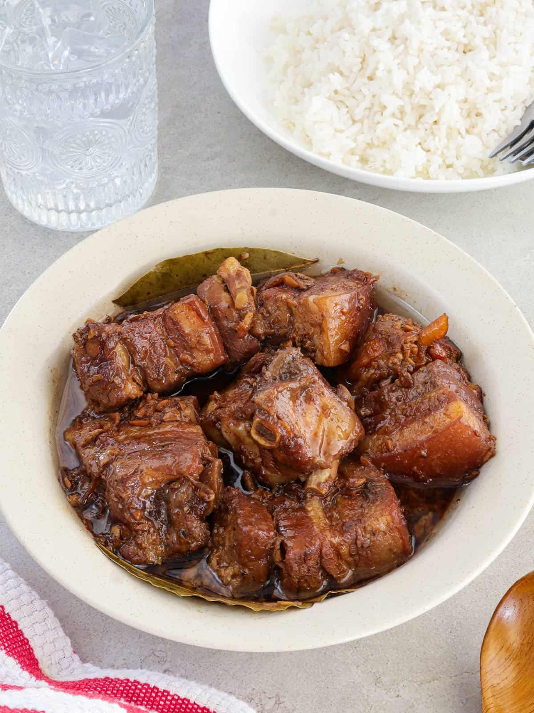

Adobo

Description
A classic Filipino dish made with meat, vinegar, soy sauce, garlic, and pepper.
Ingredients
- Chicken or pork
- Soy sauce
- Vinegar
- Garlic
- Bay leaves
- Black pepper
- Water
Steps
- Combine the meat, soy sauce, vinegar, garlic, bay leaves, and pepper.
- Bring to a boil and simmer until the meat is tender.
- Add water if needed and continue simmering.
- Serve with rice.
Home